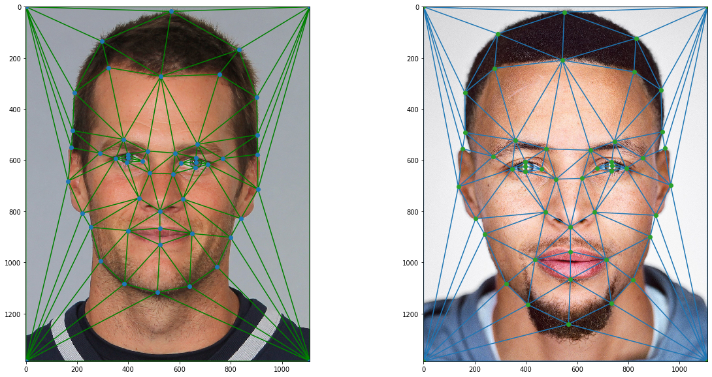
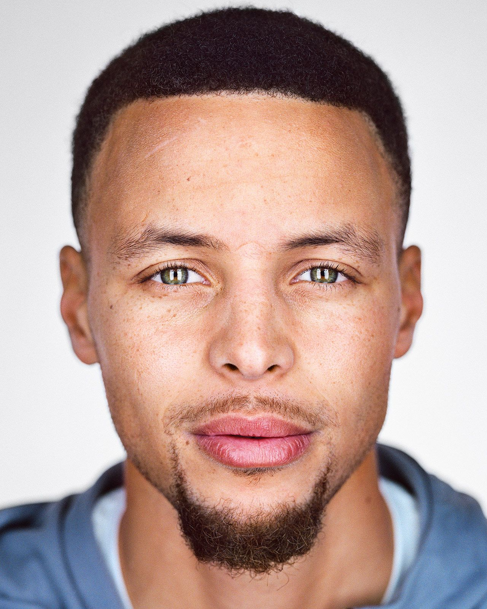
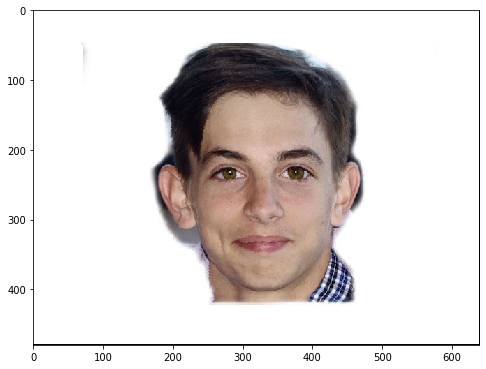
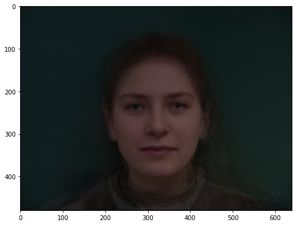
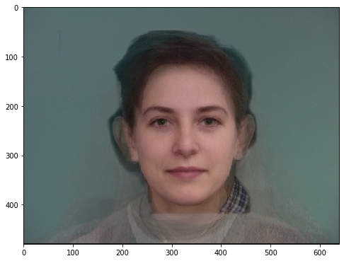

CS 194-26 Computer Vision & Computational Photography
Programming Project 2: Face Morphing
By Alek Petuskey
Overview
In this project I morph images into one another by cross-dissolving image color along with warping image shape based on key points.
For a smooth tranition the points encapsulated key features such as the outling of the face, eyes, nose, and moulth.
Defining Correspondences
In this section I used 50 key points on each face, Tom Brady and Steph Curry.
I used Delaunay triangulation to produce a reasonable set of corresponding triangles on both
faces based on the define points. This approach method avoids extremely small or large angles, which is
beneficial when morhing and warping images.
| Tom Brady (Left) & Steph Curry (Right)  |
|
Computing the "Mid-way Face"
To compute the midway image between the two faces, I averaged the pairs of correspondence points for the two images and created
an average Delaunay triangulation of the points. From each triangle in the mean face shape, the transformation matrix A is calculated. We then
perform an inverse warp to each triangle of the face of our corresponding images. Then interpolate the color values to each corresponding
image. We then then take an average of the colors on both images, which creates a cross-dissolve aligned to the average face face.
The Morph Sequence
The morph sequence process is very similar computing the miodway face. We align the faces to a midway shape and cross-dissolve the interpolated values.
I decieded to use 50 steps for the morph sequence.
| |
|  |
|  |
|
The "Mean face" of a population
I used the Dane dataset due to its nicley formatted photos and uniformly labeled points. As seen below I averaged all of the
postions of the faces seperatly. Additionally I also created a seperate female only average because the since the dataset was
primarily male dominated the average looked only male.
Average Male
Average Female
Morphing To Average
Danish Computer Scientists
Male 1 to Average Male  |
| Male 2 to Average Male  |
| Female 1 to Average Female  |
| Female 2 to Average Female  |
|
Myself to Average Male Danish Comuter Scientist
Caricatures: Extrapolating from the mean
To produce a caricature, I extrapolated from the Danish mean by finding the difference between my face
and the mean face. I then added a scalar alpha to it to exagerrate these differences.
Male Danish Computer Scientist Example
Female Danish Computer Scientist Example
Myself with Average Male Computer Scientist
Bells and Whistles
Face Morph To Danish Female
| Morphing Just Shape |
| Morphing Just Color |
| Morphing Both Color & Shape  |
|
My Face Morph To Danish Female Gif